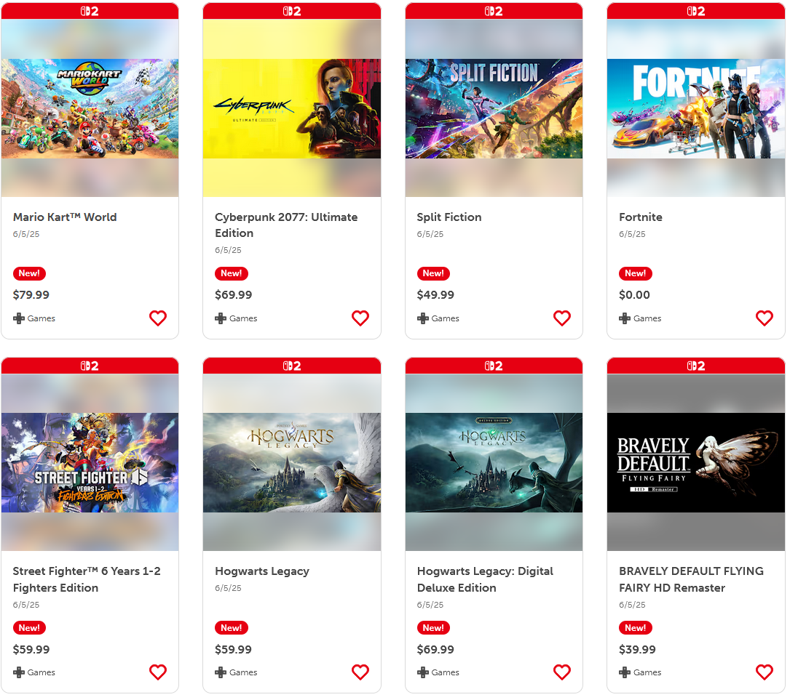

Justified Games Price Inflation?
There has been a lot of discussion recently revolving around the price of triple A games raising from $60 to $70, and with the release of the Nintendo Switch 2 and a few of their games being as high as $80 it may be time to revisit this topic.
Screenshot from Nintendo.com
The majority of console game consumers are not those who are willing to spent a large sum of money on a new game, especially with how saturated the market is in some genres. However, one must take into account inflation when discussing whether the price of games are even increasing at all. Using Super Mario 64 as a base point, we can construct the following table using estimates from the Consumer Price Index Calculator to view the increasing prices accounting for inflation.
| Year | Cost (Rel to 1996) | Cost (Rel to 2025) |
|---|---|---|
| 1996 | $60 | $29.31 |
| 2000 | $66.01 | $32.24 |
| 2010 | $83.46 | $40.77 |
| 2020 | $98.71 | $48.22 |
| 2025 | $122.83 | $60 |
Since Super Mario 64 released all the way back in 1996, the worth of $60 had just about halved with respect to inflation. Whether or not this justifies the price hike that were seeing is up to the individual, as when it comes to entertainment products it is always the consumer's choice of whether to buy or not. However, when judging companies for increasing their prices keep in mind $60 has not always been $60.